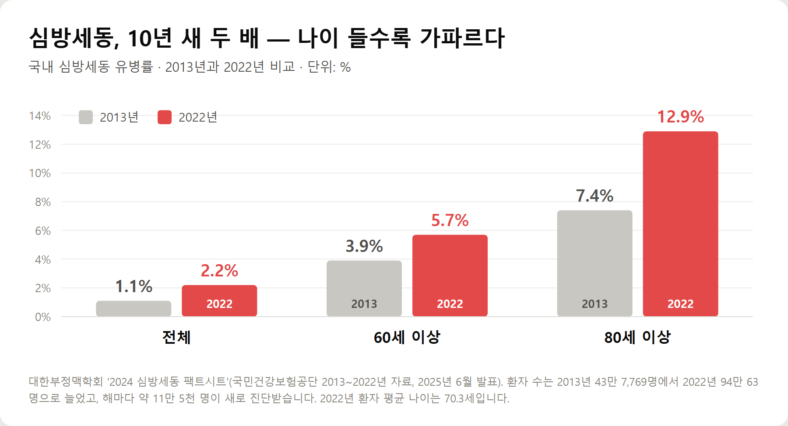
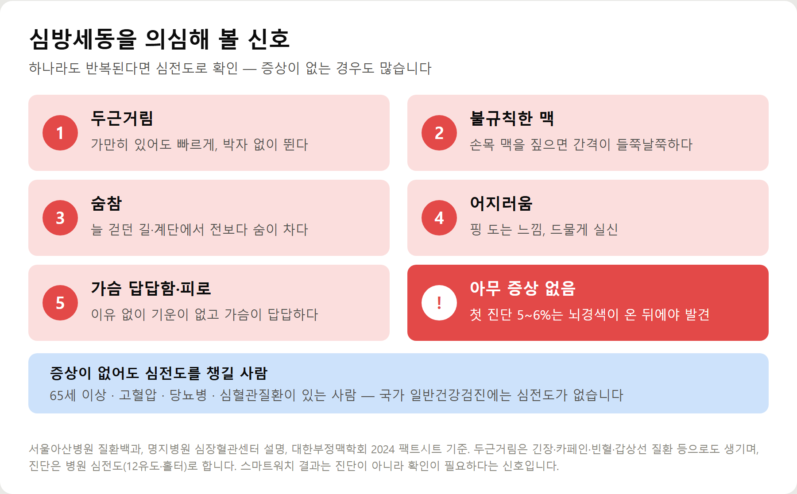
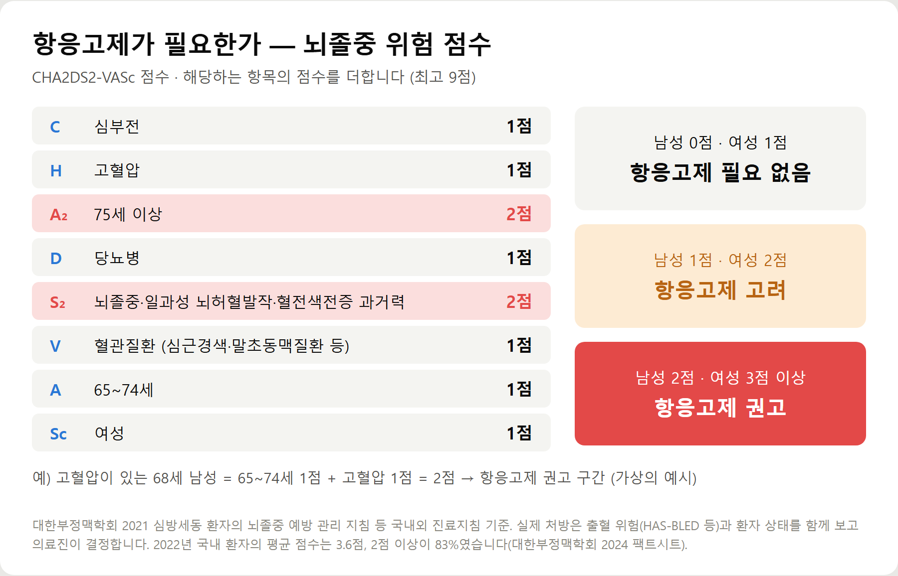
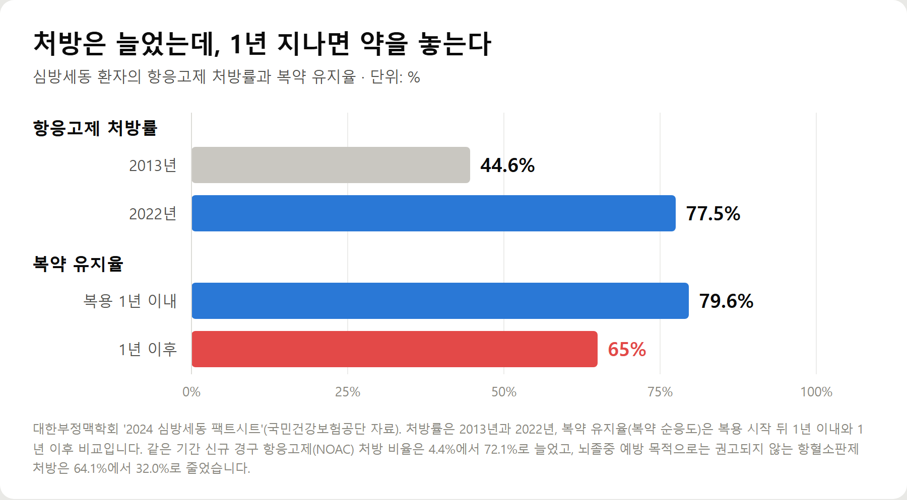

<meta charset="utf-8">
<title>심방세동 정리 — 두근거림이 뇌경색으로 이어지는 이유 — 나의 투자 그리고 행복한 여행</title>
<meta name="description" content="심방세동 증상과 뇌졸중 위험, CHA2DS2-VASc 점수, 항응고제·절제술, 복약 유지율 하락까지 대한부정맥학회 2024 팩트시트 기준으로 정리했습니다.">
<meta name="viewport" content="width=device-width, initial-scale=1">
<link rel="canonical" href="https://worldtraveler1.tistory.com/63">
<link rel="preconnect" href="https://fonts.googleapis.com">
<link rel="preconnect" href="https://fonts.gstatic.com" crossorigin>
<link rel="stylesheet" href="https://fonts.googleapis.com/css2?family=Hahmlet:wght@400;600;800&family=IBM+Plex+Mono:wght@400;500&family=IBM+Plex+Sans+KR:wght@300;400;500;600&display=swap">

<style>
  :root{
    --paper:#F2EEE6;--surface:#FAF8F3;--surface-2:#E7E1D5;
    --ink:#191510;--ink-2:#4A4235;--ink-3:#7D7364;
    --line:#D6CEBF;--line-soft:#E4DDD0;--accent:#B06A15;--accent-bright:#C2761A;
    --up:#E5484D;--down:#3B82F6;
    --f-display:"Hahmlet",'Nanum Myeongjo',"Apple SD Gothic Neo",serif;
    --f-body:"IBM Plex Sans KR","Apple SD Gothic Neo","Malgun Gothic",sans-serif;
    --f-mono:"IBM Plex Mono","SFMono-Regular",Consolas,monospace;
    --pad:clamp(20px,5vw,64px);
  }
  @media (prefers-color-scheme:dark){
    :root:not([data-theme="light"]){
      --paper:#0B1120;--surface:#121A2C;--surface-2:#1A2439;
      --ink:#E9EEF7;--ink-2:#A9B5C9;--ink-3:#72809A;
      --line:#26314A;--line-soft:#1D2739;--accent:#E8A33D;--accent-bright:#F0B45C;
    }
  }
  *{box-sizing:border-box;}
  body{margin:0;background:var(--paper);color:var(--ink);font-family:var(--f-body);
    font-weight:300;font-size:1rem;line-height:1.75;-webkit-font-smoothing:antialiased;}
  a{color:inherit;}
  img{max-width:100%;height:auto;}
  .wrap{max-width:760px;margin:0 auto;padding-inline:var(--pad);}
  .nav{position:sticky;top:0;z-index:20;background:color-mix(in srgb,var(--paper) 88%,transparent);
    backdrop-filter:saturate(180%) blur(12px);border-bottom:1px solid var(--line);}
  .nav-in{display:flex;align-items:center;justify-content:space-between;height:58px;}
  .brand{font-family:var(--f-display);font-weight:600;font-size:1rem;letter-spacing:-.02em;text-decoration:none;}
  .back{font-family:var(--f-mono);font-size:.72rem;color:var(--ink-3);text-decoration:none;}
  .article{padding-block:clamp(40px,7vw,72px) clamp(56px,9vw,96px);}
  .eyebrow{font-family:var(--f-mono);font-size:.68rem;letter-spacing:.16em;text-transform:uppercase;
    color:var(--accent);margin:0 0 14px;}
  h1{font-family:var(--f-display);font-weight:800;font-size:clamp(1.6rem,4.4vw,2.3rem);
    line-height:1.3;letter-spacing:-.03em;margin:0 0 16px;}
  .byline{font-family:var(--f-mono);font-size:.72rem;color:var(--ink-3);
    padding-bottom:24px;border-bottom:1px solid var(--line);margin-bottom:32px;}
  h2{font-family:var(--f-display);font-weight:600;font-size:1.25rem;letter-spacing:-.02em;margin:42px 0 14px;}
  h3{font-family:var(--f-display);font-weight:600;font-size:1.05rem;letter-spacing:-.02em;
    margin:30px 0 10px;padding-top:14px;border-top:1px solid var(--line-soft);}
  h3 .code{font-family:var(--f-mono);font-size:.7rem;font-weight:400;color:var(--ink-3);margin-left:6px;}
  p{margin:0 0 18px;color:var(--ink-2);}
  ul.checks{margin:0 0 18px;padding-left:20px;color:var(--ink-2);}
  ul.checks li{margin-bottom:8px;font-size:.94rem;}
  table{width:100%;border-collapse:collapse;font-size:.88rem;margin-bottom:8px;}
  th{font-family:var(--f-mono);font-size:.66rem;letter-spacing:.06em;text-transform:uppercase;
    color:var(--ink-3);text-align:right;padding:8px 6px;border-bottom:1px solid var(--line);}
  th:first-child{text-align:left;}
  td{padding:10px 6px;border-bottom:1px solid var(--line-soft);color:var(--ink-2);}
  td.num{font-family:var(--f-mono);text-align:right;font-variant-numeric:tabular-nums;}
  td.up{color:var(--up);} td.down{color:var(--down);}
  .scroll{overflow-x:auto;}
  figure{margin:22px 0;}
  figure img{display:block;border-radius:3px;background:var(--surface-2);}
  figcaption{margin-top:8px;font-family:var(--f-mono);font-size:.68rem;color:var(--ink-3);text-align:center;}
  .note{margin-top:34px;padding:16px 18px;border-left:3px solid var(--accent);
    background:var(--surface);border-radius:0 3px 3px 0;}
  .note p{margin:0;font-size:.85rem;color:var(--ink-3);}
  .foot{border-top:1px solid var(--line);background:var(--surface);padding-block:30px 38px;}
  .foot p{margin:0;font-size:.8rem;color:var(--ink-3);}
</style>

<nav class="nav">
  <div class="wrap nav-in">
    <a class="brand" href="../index.html">나의 투자 그리고 행복한 여행</a>
    <a class="back" href="../index.html#stocks">← 시황으로</a>
  </div>
</nav>

<main class="wrap article">
  <p class="eyebrow">Market</p>
  <h1>심방세동 정리 — 유병률, 뇌졸중 위험 점수(CHA2DS2-VASc), 항응고제와 절제술 (2026)</h1>
  <p class="byline">건강 · 2026-09-14 기준</p>

  <p>한 줄 요약: 심방세동 유병률은 2013년 1.1%에서 2022년 2.2%로 두 배가 됐고(대한부정맥학회), 뇌졸중 위험을 4~5배 높입니다. 위험 점수에 맞춰 항응고제를 꾸준히 먹는 것이 뇌경색 예방의 핵심인데, 복약 유지율은 1년이 지나면 65%로 떨어집니다.</p>
  <p>대한부정맥학회 2024 팩트시트, 진료지침, 건강보험 기준과 2026년 9월 보도를 바탕으로 정리한 기록입니다.</p>
  <h2>핵심만 먼저</h2>
  <ul class="checks">
    <li>심방세동 — 심방이 제대로 수축하지 못하고 잘게 떨리면서 맥이 불규칙해지는 부정맥입니다</li>
    <li>위험 — 심방 안에 고인 피가 굳어 핏덩이가 생기고, 뇌로 가면 뇌경색이 됩니다. 뇌졸중 위험이 4~5배 높습니다</li>
    <li>얼마나 흔한가 — 2022년 환자 94만 명, 60세 이상 5.7%, 80세 이상 13% (대한부정맥학회)</li>
    <li>찾는 법 — 심전도. 증상이 없는 경우가 많고, 국가 일반건강검진에는 심전도가 없습니다</li>
    <li>막는 법 — 위험 점수에 따라 항응고제를 먹고, 끊지 않는 것. 아스피린으로는 대신할 수 없습니다</li>
  </ul>
  <h2>1. 심방세동이란 — 왜 뇌경색으로 이어지나</h2>
  <p>정상 심장은 위쪽 방(심방)이 먼저 수축해 아래쪽 방(심실)으로 피를 밀어 넣습니다. 심방세동이 오면 심방이 제대로 수축하지 못하고 빠르게, 잘게 떨리기만 합니다. 맥은 빠르고 불규칙해집니다.</p>
  <p>문제는 피가 제대로 빠져나가지 못하고 심방에 고인다는 점입니다. 특히 좌심방에 붙은 엄지손가락 모양의 작은 주머니(좌심방이)에 피가 머물다 굳어 핏덩이(혈전)가 생깁니다.</p>
  <p>이 핏덩이가 떨어져 나가 혈관을 따라 뇌로 가면 뇌혈관을 막습니다. 심방세동 환자의 뇌졸중 위험이 정상인보다 4~5배 높고, 심장병 사망률이 약 2배인 이유입니다(서울아산병원 질환백과).</p>
  <p>심장에서 온 핏덩이는 크기가 커서 큰 뇌혈관을 막는 경우가 많습니다. 그만큼 후유증도 큰 편으로 알려져 있습니다.</p>
  <h2>2. 심방세동 환자, 10년 새 두 배</h2>
  <figure><figcaption>심방세동 유병률 2013년과 2022년 비교 — 전체·60세 이상·80세 이상 (대한부정맥학회 2024 팩트시트)</figcaption></figure>
  <p>대한부정맥학회가 건강보험공단 자료로 분석한 2024 심방세동 팩트시트에 따르면 유병률은 2013년 1.1%(43만 7,769명)에서 2022년 2.2%(94만 63명)로 두 배가 됐습니다. 해마다 약 11만 5천 명이 새로 진단받습니다.</p>
  <p>나이가 들수록 급격히 늘어납니다. 60세 이상 유병률은 3.9%에서 5.7%로, 80세 이상은 7.4%에서 12.9%로 올랐습니다. 환자 평균 나이는 70.3세입니다.</p>
  <p>동반 질환도 많습니다. 2022년 환자의 80.5%가 고혈압, 31.5%가 당뇨병, 27.6%가 심부전을 함께 앓고 있었고, 20.9%는 이미 뇌경색을 겪은 적이 있었습니다.</p>
  <h2>3. 심방세동 증상 — 두근거림, 그리고 '아무 증상 없음'</h2>
  <figure><figcaption>심방세동을 의심해 볼 신호와 심전도가 필요한 사람</figcaption></figure>
  <ul class="checks">
    <li>두근거림 — 가만히 있어도 심장이 빠르게, 박자 없이 뛰는 느낌</li>
    <li>불규칙한 맥 — 손목 맥을 짚으면 간격이 들쭉날쭉합니다</li>
    <li>숨참 — 평소 걷던 길, 계단에서 전보다 숨이 찹니다</li>
    <li>어지러움 — 핑 도는 느낌, 드물게 실신</li>
    <li>가슴 답답함·피로 — 이유 없이 기운이 없고 가슴이 답답합니다</li>
  </ul>
  <p>그런데 증상이 전혀 없는 사람도 많습니다. 명지병원은 심방세동이 뚜렷한 증상 없이 지나가는 경우가 많아 65세 이상이거나 고혈압·당뇨병·심혈관질환이 있으면 검사가 필요하다고 설명합니다.</p>
  <p>대한부정맥학회 자료로는 심방세동을 처음 진단받은 환자의 5~6%가 뇌경색이 생긴 뒤에야 심방세동을 알았습니다. 첫 증상이 뇌경색이었던 셈입니다.</p>
  <p>처음에는 증상이 나타났다 사라지는 발작성으로 시작하는 경우가 많습니다. 병원에 갔을 때는 맥이 정상이라 한 번의 심전도로 안 잡히기도 합니다. 증상이 있을 때 기록하는 것이 중요한 이유입니다.</p>
  <h2>4. 검사 — 심전도, 홀터, 그리고 스마트워치</h2>
  <ul class="checks">
    <li>12유도 심전도 — 기본 검사입니다. 검사하는 순간 심방세동이 있으면 바로 진단됩니다</li>
    <li>홀터 검사 — 기계를 몸에 붙이고 24시간 이상 심전도를 기록합니다. 가끔 나타나는 부정맥을 찾습니다</li>
    <li>이벤트 기록기 — 증상이 드물 때 더 오래 착용해 증상 순간을 잡습니다</li>
    <li>심장초음파 — 판막 질환이나 심장 기능, 심방 크기를 확인합니다</li>
    <li>혈액검사 — 갑상선 기능 등 원인이 될 수 있는 질환을 봅니다</li>
  </ul>
  <p>스마트워치도 도움이 됩니다. 갤럭시워치와 애플워치의 심전도 기능은 2020년 식약처 허가를 받았습니다. 서울대병원 신경과 이승훈 교수는 "저렴한 스마트워치를 사서 부정맥을 알아보는 걸 1년에 한두 달이라도 해보면 본인의 심방세동을 스스로 진단할 수도 있다"고 말했습니다(뉴시스, 2026년 9월).</p>
  <p>다만 스마트워치 결과는 진단이 아니라 신호입니다. '심방세동 의심'이 뜨면 그 기록을 가지고 병원에서 12유도 심전도로 확인받아야 합니다. 반대로 정상이라고 나와도 증상이 계속되면 진료를 받아야 합니다.</p>
  <h2>5. 내가 항응고제가 필요한가 — 뇌졸중 위험 점수</h2>
  <figure><figcaption>심방세동 뇌졸중 위험 점수(CHA2DS2-VASc) 항목과 항응고제 판단 기준</figcaption></figure>
  <p>심방세동이 있다고 모두 같은 치료를 받지는 않습니다. 의료진은 먼저 뇌졸중 위험 점수(CHA2DS2-VASc)를 계산합니다. 대한부정맥학회 진료지침도 이 점수를 기준으로 삼습니다.</p>
  <ul class="checks">
    <li>2점 항목 — 75세 이상, 과거 뇌졸중·일과성 뇌허혈발작·혈전색전증</li>
    <li>1점 항목 — 심부전, 고혈압, 당뇨병, 혈관질환(심근경색·말초동맥질환 등), 65~74세, 여성</li>
    <li>0점(여성 1점) — 항응고제가 필요 없는 저위험군</li>
    <li>그 이상 — 항응고제 복용을 권고하거나 고려합니다. 남성 2점·여성 3점 이상이면 권고됩니다</li>
  </ul>
  <p>점수가 높은 사람이 많습니다. 2022년 국내 환자의 평균 점수는 3.6점이었고, 뇌졸중 예방이 필요한 2점 이상이 83%였습니다. 대부분의 심방세동 환자는 항응고제가 필요하다는 뜻입니다.</p>
  <p>예를 들어 고혈압이 있는 68세 남성이라면 65~74세 1점, 고혈압 1점으로 2점입니다. 가상의 예시지만, 60대 후반에 혈압약을 먹는 사람이면 이미 항응고제 권고 구간에 들어갈 수 있다는 걸 보여 줍니다. 실제 판단은 출혈 위험까지 함께 보고 의료진이 합니다.</p>
  <h2>6. 치료 — 핏덩이를 막고, 박동을 다스린다</h2>
  <p>치료는 두 갈래입니다. 하나는 뇌경색을 막는 것, 다른 하나는 불규칙한 박동을 조절하는 것입니다.</p>
  <ul class="checks">
    <li>항응고제 — 피가 굳지 않게 하는 약. 요즘은 와파린보다 먹기 편한 NOAC(신규 경구 항응고제)을 주로 씁니다. 국내 처방 비율은 2013년 4.4%에서 2022년 72.1%로 늘었습니다</li>
    <li>심박수 조절 — 너무 빠른 맥을 약으로 늦춥니다</li>
    <li>리듬 조절 — 항부정맥제나 전기 충격으로 정상 리듬을 되돌립니다</li>
    <li>전극도자절제술 — 가는 관을 심장에 넣어 비정상 전기 신호가 나오는 부위를 고주파·냉각·전기장(펄스장) 에너지로 차단합니다. 발작성 초기에 효과가 좋은 편입니다</li>
    <li>좌심방이 폐색술 — 출혈 위험이 커 항응고제를 오래 먹기 어려운 사람에게, 핏덩이가 주로 생기는 좌심방이를 기구로 막습니다</li>
  </ul>
  <p>절제술은 국내에서 아직 적게 쓰이는 편입니다. 시술 비율은 2013년 0.35%에서 2022년 0.71%로 늘었지만, 학회는 해외 주요국보다 낮다며 더 적극적인 리듬 조절이 필요하다고 봅니다. 최근에는 시술 시간이 짧은 펄스장 절제술을 도입하는 병원도 늘고 있습니다.</p>
  <h2>7. 놓치기 쉬운 부분 — 약을 끊는 순간 보호막도 사라진다</h2>
  <figure><figcaption>항응고제 처방률은 올랐지만 복약 유지율은 1년 뒤 떨어진다 (대한부정맥학회 2024 팩트시트)</figcaption></figure>
  <p>치료 환경은 10년 사이 크게 좋아졌습니다. 항응고제 처방률은 2013년 44.6%에서 2022년 77.5%로 올랐습니다.</p>
  <p>그런데 먹기 시작한 뒤가 문제입니다. 복약을 잘 지키는 비율은 처음 1년 안에는 79.6%지만, 1년이 지나면 65%로 떨어집니다. 세 명 중 한 명꼴로 약을 제대로 먹지 않게 된다는 뜻입니다.</p>
  <p>증상이 없어졌다고, 멍이 잘 든다고, 약이 많다고 스스로 끊는 경우가 많습니다. 하지만 항응고제는 증상을 없애는 약이 아니라 핏덩이를 막는 약입니다. 먹지 않는 날에는 보호막이 없습니다.</p>
  <p>"아스피린을 먹고 있으니 괜찮다"는 생각도 흔한 오해입니다. 대한부정맥학회 지침은 심방세동 환자의 뇌졸중 예방 목적으로 항혈소판제만 쓰는 것을 권하지 않습니다. 실제로 항혈소판제 처방 비율은 64.1%에서 32.0%로 줄었습니다.</p>
  <p>사는 곳에 따른 차이도 있습니다. 항응고제 처방률은 전북 64.9%, 서울 80.5%, 제주 82.1%로 달랐고, 학회는 의료 접근성이 낮을수록 처방률이 낮다고 지적했습니다. 부모님이 지방에 계신다면 처방과 복용을 한 번 더 챙겨 볼 이유입니다.</p>
  <h2>비용·조건 한눈에 보기</h2>
  <ul class="checks">
    <li>국가건강검진 — 2026년 9월 현재 일반건강검진 항목에 심전도가 없습니다. 학회는 60세 이상 검진에 심전도를 넣자고 제안하고 있습니다</li>
    <li>심전도·홀터 검사 — 증상이 있거나 의사가 필요하다고 판단하면 건강보험이 적용됩니다</li>
    <li>외래 본인부담 — 일반 기준 의원 30%, 병원 40%, 종합병원 50%, 상급종합병원 60%</li>
    <li>절제술 건강보험 — 항부정맥제를 6주 이상 충분히 써도 증상이 조절되지 않거나, 부작용 등으로 약을 유지할 수 없을 때 급여 대상입니다 (심평원 고시 2022-26호)</li>
    <li>좌심방이 폐색술 — 심평원이 지정한 시행기관에서 받습니다</li>
    <li>민간 보험 — 순환계 치료비·부정맥 특약은 상품마다 보장 범위가 달라 약관을 확인해야 합니다</li>
  </ul>
  <h2>주의할 점</h2>
  <ul class="checks">
    <li>항응고제는 임의로 끊지 않습니다 — 치과 치료·내시경·수술 전에도 의사와 상의해 조절합니다</li>
    <li>먹는 약을 모두 알립니다 — 진통소염제, 한약, 건강기능식품이 출혈 위험을 높일 수 있습니다</li>
    <li>잇몸·코피·검은 변·멍이 심하면 병원에 알립니다 — 약을 끊는 대신 조절합니다</li>
    <li>술을 줄입니다 — 음주는 심방세동과 관련이 있는 생활 요인입니다</li>
    <li>갑자기 한쪽 팔다리 힘이 빠지거나 말이 어눌해지면 즉시 119 — 심방세동 환자는 뇌경색 위험군입니다</li>
  </ul>
  <h2>자주 묻는 질문</h2>
  <p>Q. 두근거림이 있으면 다 심방세동인가요?</p>
  <p>아닙니다. 긴장, 카페인, 빈혈, 갑상선 질환 등 원인은 다양합니다. 다만 맥이 불규칙하게 뛰거나 두근거림이 반복되면 심전도로 확인해 보는 것이 좋습니다.</p>
  <p>Q. 증상이 없는데 치료해야 하나요?</p>
  <p>증상과 뇌졸중 위험은 별개입니다. 증상이 없어도 위험 점수가 높으면 항응고제가 권고됩니다.</p>
  <p>Q. 스마트워치로 진단받을 수 있나요?</p>
  <p>스마트워치 심전도는 의심 신호를 찾는 도구입니다. 이상이 나오면 병원에서 12유도 심전도나 홀터 검사로 확인받아야 진단이 됩니다.</p>
  <p>Q. 항응고제는 평생 먹어야 하나요?</p>
  <p>위험 점수가 높으면 오래 복용하는 경우가 많습니다. 절제술로 리듬이 돌아와도 항응고제 중단 여부는 위험 점수를 기준으로 의료진이 판단합니다. 스스로 끊지 않는 것이 중요합니다.</p>
  <p>Q. 심방세동이면 운동하면 안 되나요?</p>
  <p>대부분은 적당한 운동이 도움이 됩니다. 다만 맥이 너무 빠르거나 증상이 심할 때는 강도를 의사와 상의합니다.</p>
  <h2>정리하면</h2>
  <p>심방세동은 60세 이상 5.7%, 80세 이상 13%가 앓는 흔한 부정맥이고, 뇌졸중 위험을 4~5배 높입니다. 증상이 없는 경우가 많고 국가 일반건강검진에는 심전도가 없어, 스스로 챙기지 않으면 뇌경색이 온 뒤에야 알 수 있습니다.</p>
  <p>가끔이라도 불규칙한 두근거림이 있다면 심전도를 찍어 보고, 진단받았다면 위험 점수에 맞는 항응고제를 꾸준히 먹는 것. 심장에서 시작되는 뇌경색은 이렇게 막을 수 있습니다.</p>
  <p>다음 글에서는 뇌경색의 또 다른 원인인 경동맥 협착과 경동맥 초음파가 필요한 사람을 정리하겠습니다.</p>
  <p><b>함께 보면 좋은 글</b> — <a href="https://danielmoon82.github.io/moon/posts/tia-2026-09-14.html">팔다리 힘 빠졌다 괜찮아졌다면? 뇌졸중 전조증상 대처법</a></p>
  <div class="note"><p>이 글은 학회·공공기관 자료와 언론 보도를 바탕으로 한 일반 건강 정보이며 진단이나 치료를 대신하지 않습니다. 복용 중인 약은 의사와 상의 없이 중단하지 마세요. 갑자기 한쪽 마비, 말이 어눌해짐 같은 뇌졸중 증상이 나타나면 즉시 119에 연락하세요.</p></div>
  <p>※ 기준 시점: 유병률·동반질환·처방률·복약 유지율은 대한부정맥학회 2024 심방세동 팩트시트(건강보험공단 2013~2022년 자료, 2025년 6월 발표), 뇌졸중 위험 배수는 서울아산병원 질환백과, 항응고제 판단 기준은 대한부정맥학회 2021 뇌졸중 예방 지침, 절제술 급여기준은 심평원 고시 제2022-26호(2022년 2월 시행), 건강검진 항목은 국민건강보험공단 2026년 9월 기준입니다.</p>
</main>

<footer class="foot">
  <div class="wrap"><p>나의 투자 그리고 행복한 여행 · 투자 판단의 참고 자료일 뿐, 매수·매도를 권유하지 않습니다.</p></div>
</footer>
